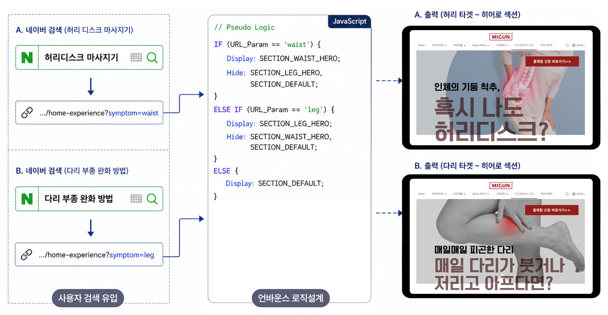
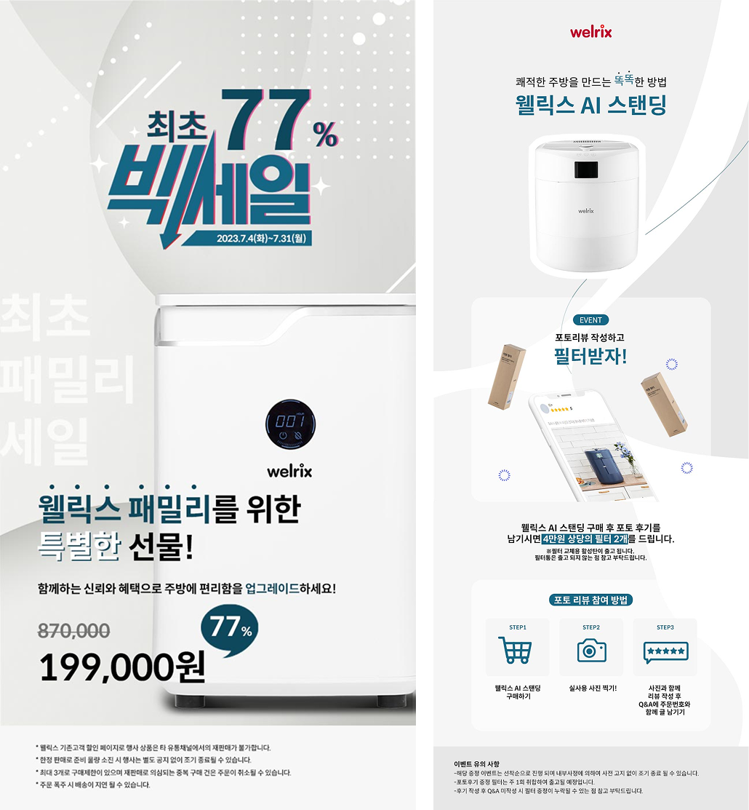
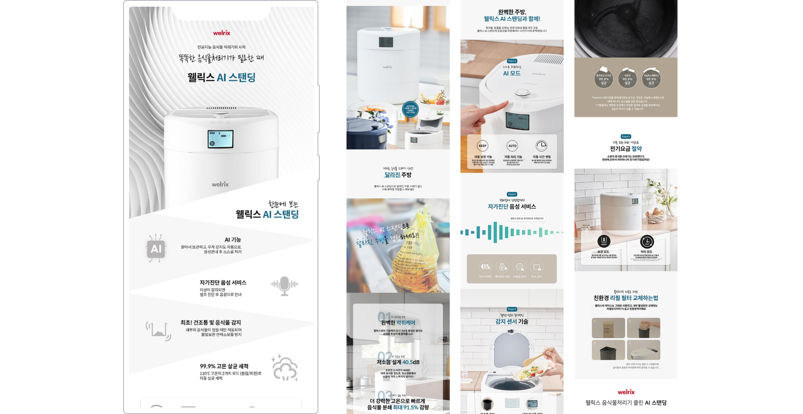
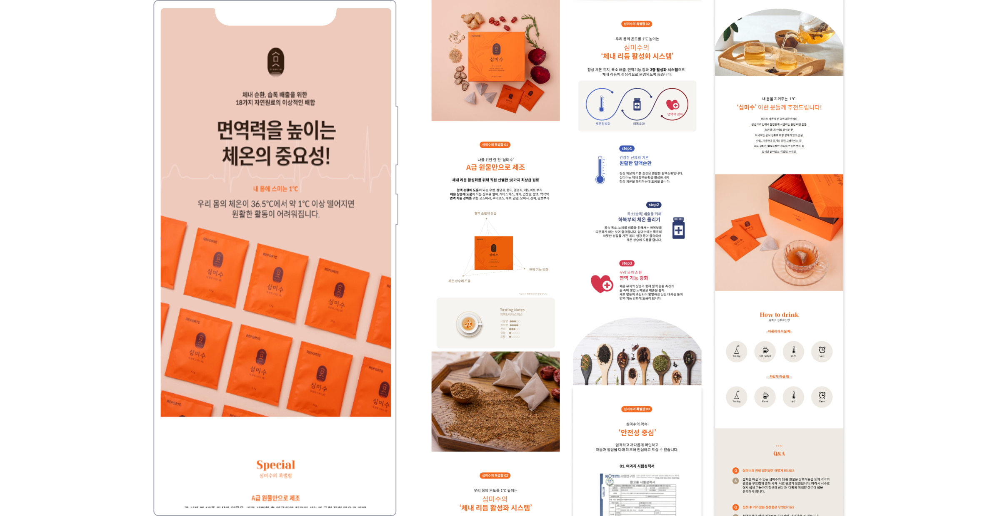

가설 설정
사용자 페인포인트와 랜딩페이지의 정보를 1:1로 매칭하면 구매 전환율을 높힐 수 있다는 가설 설정.

사용자 페인포인트와 랜딩페이지의 정보를 1:1로 매칭하면 구매 전환율을 높힐 수 있다는 가설 설정.
유입 경로에서 사용자의 증상 파라미터값에 따라 페인포인트별로 디자인을 스위칭.
CTA 클릭, 스크롤 깊이, 이탈율을 체크하기 위해 GA4 이벤트 설정.

BMW 드라이빙 센터 체험존 내 고객 참여 유도를 위한 터치형 키오스크 UI 디자인.


Welrix 브랜드의 깨끗하고 정돈된 톤을 유지하면서,
빅세일 임팩트와 제품 신뢰감을 함께 전달하는 프로모션 페이지 디자인.

각 브랜드의 결을 그대로 옮긴 상세 페이지 — 톤, 여백, 타이포 위계로 제품의 인상을 정돈.


우주만물상의 다양한 소재에 맞춰 퍼포먼스 소재 디자인.